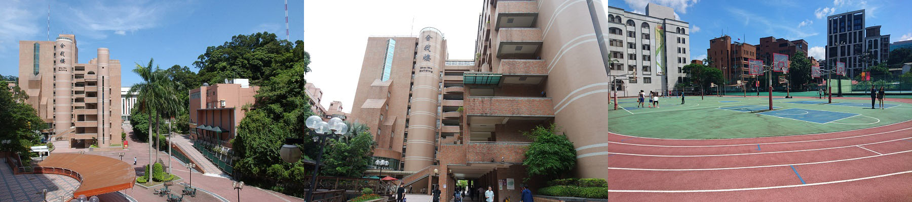
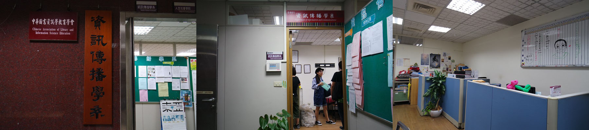
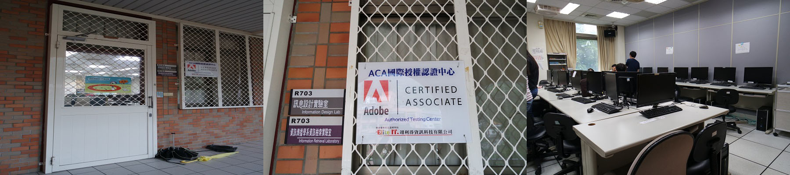

資傳歷史
資訊傳播學系原名為「圖書資訊學系」，在更早以前，資傳系為世界新聞專科學校的「圖書資料科」，設立時間為1964年10月15日。「圖書資料科」則是在1995年的8月重新訂為「圖書資訊學系」。
原為專科大學的「世界新聞傳播學院」，在1997年正式改名為世新大學，為一般普通大學。而「圖書資訊學系」也於2001年起更名為「資訊傳播學系」以因應日新月異的科技時代來臨。
校內環境
主要校舍

管院大樓
系所設備
舍我9樓系辦

LAB電腦教室

課程架構
本系課程主要分為基礎課程、核心課程、總整課程等，其中本系大學部專業核心能力為資訊設計能力、知識加值能力與網路傳播能力，而為培養同學的核心能力，本系規劃相對應課程為：
基礎課程
- 資訊傳播學概論
- 專業英文導讀（一）（二）
- 資訊源、資訊傳播產業概論
- 基礎資料分析
核心課程
- 影像數位化處理
- 程式設計概論
- 網頁設計
- 電腦動畫概論
- 訊息設計
- 影音數位化處理
- 互動程式設計
- 網路內容設計
- 數位產品技術加值
- 網站規劃與設計
- 數位典藏與創新加值規劃
- 數位媒體概論
- 數位內容產業概論
- 分類學
- 標示語言
- 資訊搜尋策略
- 知識組織
- 資料庫系統
- 知識管理應用
- 資訊應用服務
- 知識產業概論
- 競爭智慧
- 後設資料
- 數位內容管理
- 資訊傳播機構管理
- 系統分析
- 網路內容設計
- 資訊心理學
- 數位內容策展
- 專案企劃
- 資訊服務與行銷
- 使用者研究
- 傳播與文化
- 網路傳播
整合課程
- 資訊傳播學專題（一）（二）
- 資訊傳播產業研究
- 資訊傳播產業實習
課程地圖